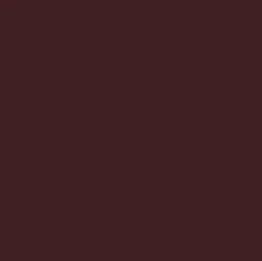
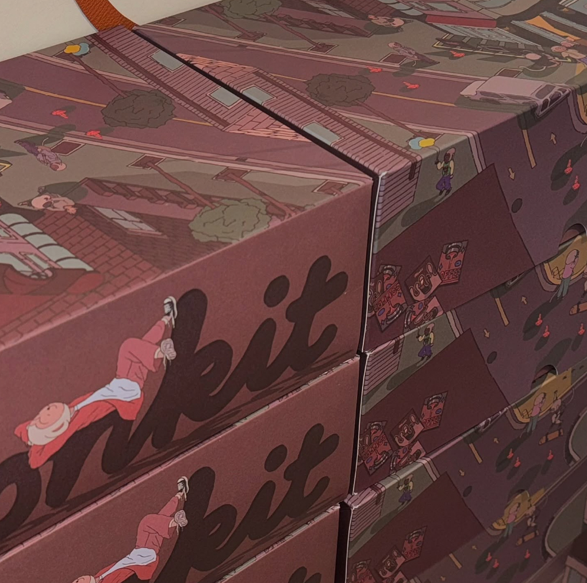
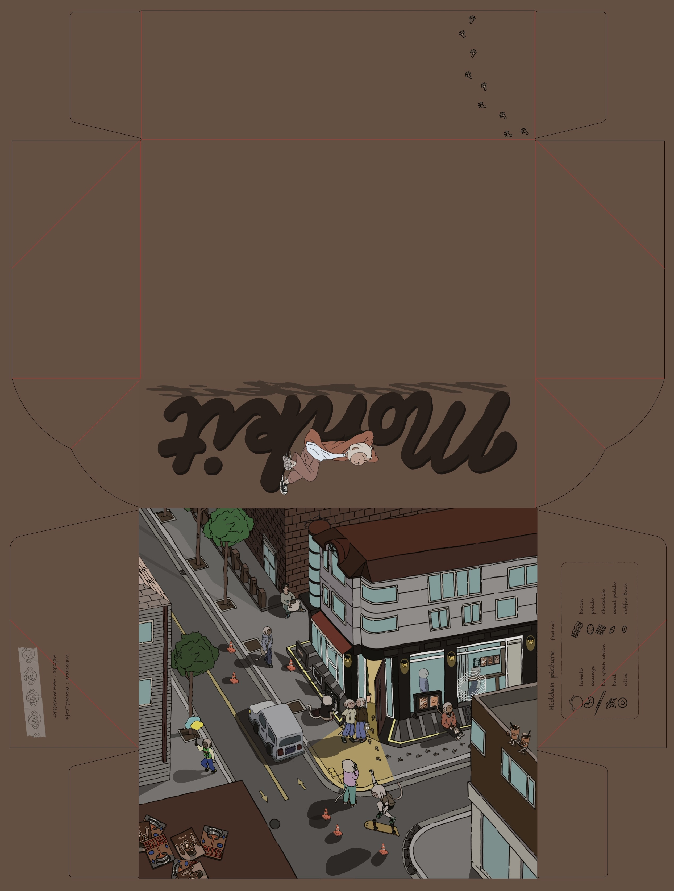
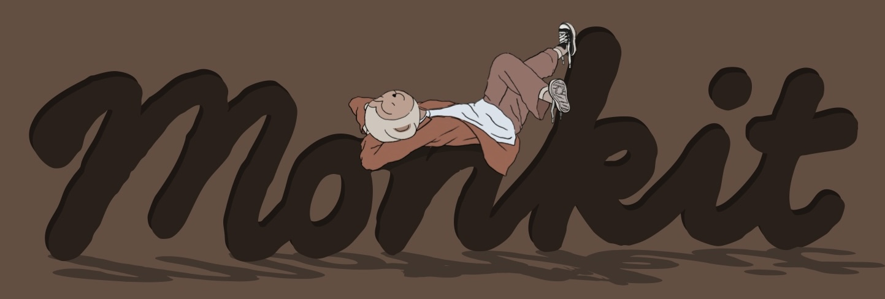
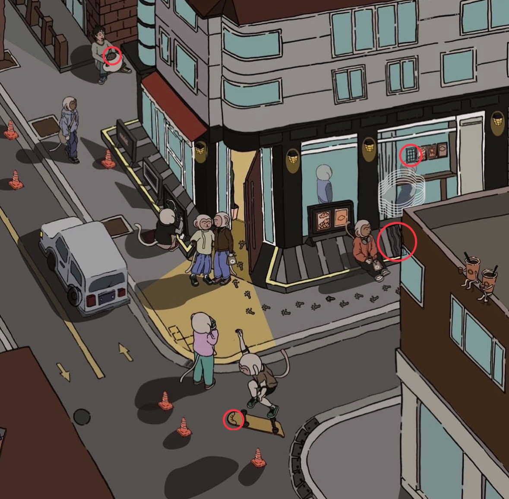
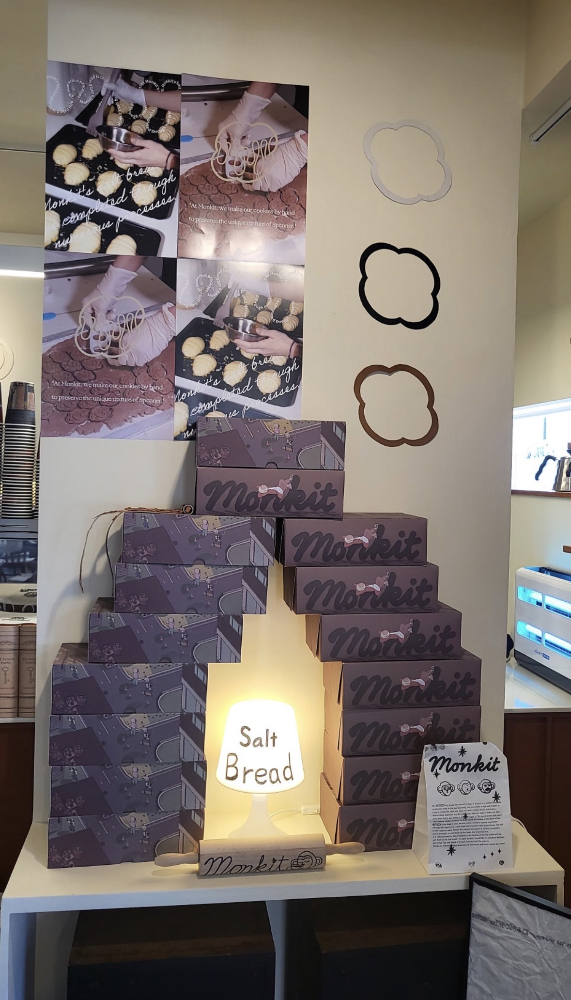

Monkit Cafe Package Design
소금빵을 중심으로 한 카페 브랜드의 감성 패키지 박스 디자인
CAFE
Concept
몽킽카페는 소금빵을 주로 판매하는 카페로, 따뜻한 조명과 부드러운 소재가 주는 차분한 공간감을 바탕으로 편안함과 안정감을 주는 ‘휴식 공간’을 패키지에 담았습니다.
Color Strategy
레드가 섞인 브라운과 로즈 톤을 사용하여 따뜻함, 안정감, 여유를 표현했습니다. 주색 #4E2F30은 깊이감 있는 공간감을 만들고, 보조색은 단계적인 밝기 조절을 통해 레이어감을 형성합니다.
UX Intention
부드러운 색감으로 눈의 피로를 줄이고, 브라운 계열로 안정적인 시선 흐름을 만들었습니다. 포인트 컬러는 와인색으로 강조하여 핵심 요소에 집중되도록 설계했습니다.
Package Structure
개봉 시 자연스럽게 펼쳐지는 구조를 활용하여 일러스트 스토리가 끊기지 않도록 연결성을 강화했습니다.
Brand Difference
숨은그림찾기, 브랜드 캐릭터, SNS 공유 이벤트를 결합해 패키지를 단순 포장이 아닌 콘텐츠로 확장했습니다.
Final Message
패키지를 단순한 포장이 아닌 브랜드 경험의 시작점으로 정의하고, 시각적 스토리와 인터랙션 요소를 결합하여 소비자와의 감성적 연결을 설계했습니다.
레드 섞인 브라운 + 로즈 톤
따뜻함, 안정감, 여유를 중심으로 한 컬러 전략입니다. 깊이감 있는 브라운 계열을 바탕으로 공간감과 감성적인 브랜드 분위기를 표현했습니다.
#4E2F30 / PANTONE 4975 C
깊이감 있는 공간감을 형성하는 메인 브라운 컬러입니다.
#3C2222 / PANTONE Black 7 C
#6C4240 / PANTONE 7596 C
#805955 / PANTONE 7606 C
#9A756F / PANTONE 7604 C
단계적인 밝기 조절로 레이어감과 Depth를 만들고,
로즈 톤을 통해 차분함 속 감성적 포인트를 더했습니다.

4975 C Black 7 C
Black 7 C
 7596 C
7596 C
 7606 C
7606 C
 7604 C
7604 C
패키지 디자인 결과물

브랜드 세계관을 담은 메인 일러스트
카페 외관과 거리 장면을 하나의 스토리처럼 구성하여, 패키지를 열기 전부터 브랜드의 분위기와 공간감을 느낄 수 있도록 설계했습니다.

패키지 전개도
박스 구조에 맞춰 일러스트와 로고가 자연스럽게 이어지도록 배치했습니다. 접히는 면과 재단선을 고려해 실제 제작 시에도 브랜드 이미지가 끊기지 않도록 구성했습니다.

Monkit logo 그래픽
부드러운 곡선형 logo에 캐릭터 요소를 결합해 편안하고 장난스러운 브랜드 이미지를 표현했습니다. 브라운 톤과 어울리도록 안정감 있는 무게감을 주었습니다.

숨은그림찾기 요소
패키지 표면에 작은 디테일을 숨겨 소비자가 이미지를 관찰하도록 유도했습니다. 단순한 포장이 아니라 브랜드를 기억하게 만드는 놀이형 경험으로 확장했습니다.

매장 진열 적용
실제 매장 공간에 패키지를 진열했을 때 브라운 컬러와 일러스트가 공간 분위기와 조화되도록 설계했습니다. 반복 진열 시에도 브랜드 인상이 선명하게 보이도록 했습니다.
패키지를 단순한 보관용 박스가 아니라 매장 분위기와 연결되는 시각 매체로 확장했습니다. 소비자가 자연스럽게 사진을 찍고 공유하고 싶도록 진열성과 완성도를 함께 고려했습니다.